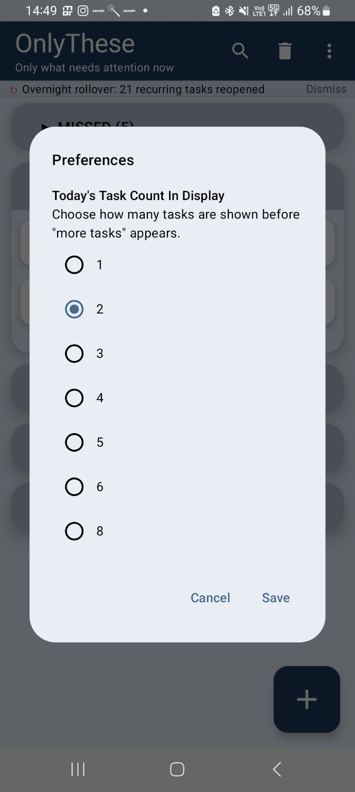

TOO MANY PRIORITIES
Too Many Priorities? Focus on What Matters Now
When everything is a priority, nothing gets a clear share of your attention.
The priority problem
A task list can contain many things that matter. But importance does not mean every task needs your attention at the same moment. When every priority is visible, you can spend more time choosing than doing.
Prioritize attention, not your entire life
You do not need to rank every future commitment every morning. A more practical approach is to identify the small set that needs attention now while keeping the rest available for later.
OnlyThese limits immediate competition
OnlyThese lets you decide how many Today tasks should be visible. You can drag tasks into the visible window and reorder them. Completing a visible task allows another task to move into focus.
A simpler way to work from your task list
- Choose the number of Today tasks you want to see.
- Reorder tasks as priorities change.
- Keep future and recurring commitments available.
- Move forward one completed task at a time.


See how OnlyThese works
OnlyThese is a task manager designed to manage attention, not just tasks. Explore the product page for the full overview, how it works, features, video and testing information.
OnlyThese — Show only what needs attention now.Currently in Google Play closed testing
Learn more about OnlyThese →